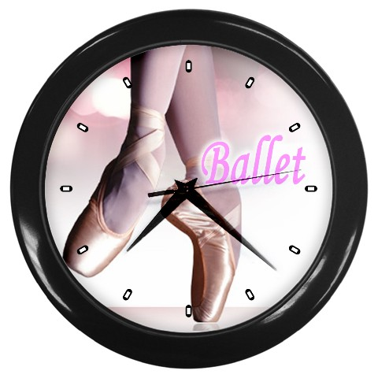
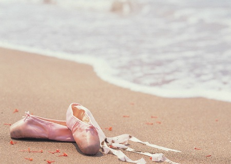

Rooster 
Het dansrooster en jaarplanner voor dansseizoen 2021-2022.
Jaarplanner/vrije dagen:

zondag 12 september 2021 = OpenDag
(OpenDag i.s.m. Theater de Kik en All Music, de hele dag gratis workshops & presentaties)
maandag 13 september 2021= Start seizoen 21-22
(1e lessen volgens lesrooster)
zaterdag 2 oktober 2021 DansDag (Corona Compensatie dansworkshops waaronder; ballet/flamenco/burlesque/buikdans/modern/jazz)
11 t/m 21 oktober 2021 Sjors Sportief weken (via Sjors Sportief doen kinderen uit omgeving proeflessen mee)
25 t/m 29 oktober 2021 Herfstvakantie (in de vakantie zijn er geen lessen)
8 t/m 12 november 2021 Kijk-lessen (familie en vrienden kunnen een les komen bekijken)
zondag 19 december 2021 Winter Voorstelling (kleine voorstelling in theater de Kik met een aantal groepen)
27 december 2021 t/m 7 januari 2022 Kerstvakantie (in de vakantie zijn er geen lessen)
21 t/ 25 februari 2022 Verkleed lessen (Kom verkleed naar de lessen deze week!)
28 februari t/m 4 maart 2022 Carnavalsvakantie (in de vakantie zijn er geen lessen)
maandag 18 april 2022 2e Paasdag (dit is een vrije dag, er zijn geen lessen)
woensdag 27 april 2022 Koningsdag (dit is een vrije dag, er zijn geen lessen)
2 t/m 13 mei 2022 Meivakantie (in de vakantie zijn er geen lessen)
30 mei t/m 3 juni 2022 Kijk-lessen (familie en vrienden kunnen een les komen bekijken)
maandag 6 juni 2022 2e Pinksterdag (dit is een vrije dag, er zijn geen lessen)
4 t/ 15 juli 2022 Orientatie weken (Kinderen uit de K4 groepen (diploma groep) mogen in andere lessen orienteren welke dansstijl zij volgend seizoen willen kiezen)
zaterdag 9 juli 2022 Open Podium (Maak samen of alleen een eigen choreografie/dans en laat deze zien aan je publiek! Voor alle leerlingen)
18 t/m 22 juli 2022 Diploma lessen (Oudste kleuters uit K1 en oudste kinder groep K4 ontvangen hun diploma's. Familie en vrienden mogen hierbij aanwezig zijn!)
vanaf 25 juli 2022 Zomervakantie (in de vakantie zijn er geen lessen)
! ( sommige vakanties/vrije dagen kunnen afwijken van de schoolvakanties)
Wijzigingen voorbehouden!